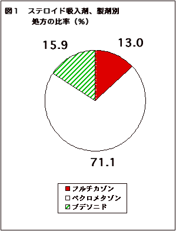
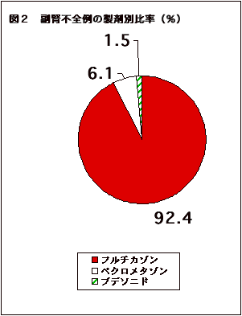

ＴＩＰ「正しい治療と薬の情報」2004年３月号より転載（医薬専門家向け情報）
喘息治療におけるベクロメタゾン製剤を中心とした吸入ステロイド剤の位置はゆるぎない1-3)。β作動剤の使用がかえって喘息死を増加させた4-6)のと、状況を異にする。
しかし、ステロイドの性質を考慮すれば、その無制限な使用、あるいは条件（製剤、使用量、個体差、併用薬など）によっては害の方が益を上回る可能性は十分に考えられることであった。
2002年にToddらが報告した調査7)は、そうした危惧が単に杞憂ではなく現実のものであることを如実に示したものである。本稿では、この論文掲載時のEditorialの記事8)もあわせて紹介し、その示す重大な意味について考察する。
フルチカゾンが他の吸入ステロイド剤に比較して「危険」ということを端的に表しているため、ちょうど記事を依頼されていた「週刊金曜日」の2004年2月13日号9)に、フルチカゾンは副腎機能が抑制されやすく「危険」であることを簡単に書いた。TIP誌や『薬のチェックは命のチェック』ではこの問題をまだ扱っていなかったため、TIP誌、『薬のチェックは命のチェック』の読者の医師、患者から問い合わせがあった。現時点で判明している範囲で問題点を指摘しておきたい。
Toddらの研究の重要性を語るための背景として、Editorial 8)は以下のように述べている。
約30年前に喘息治療に導入された当初から、吸入ステロイド療法は有効で安全とされてきた。推奨容量では副腎抑制はなく、経口剤から切り替えると副腎機能が回復した。しかし、その後、吸入ステロイド療法でも用量依存性の副腎抑制（臨床症状を伴わない生化学的変化）9)など全身性の影響がありうることが認識されるようになってきたが、全体としては害よりも益の方が勝ると考えられ、クロモグリク酸よりも吸入ステロイド療法が第1選択と考えられるようになってきた。小児科領域においても、成人治療に追随するように、承認用量を超え大量使用がなされるようになってきた。この大量療法は、統計学的に有意であっても、用量-反応曲線は平坦となり、臨床的には意味がなくなるものであり、文献的裏づけを欠いている。また、製薬企業は吸入ステロイド療法でそのような大量使用を推奨したことがないということも強調しておく必要がある。
クッシング症候群や急性副腎不全の散発的報告、あるいは用量依存性の低身長などの報告はあったが、一方で小児に使用しても正常な成人身長がえられたとの報告で安心してしまい、「有効最小量を使用するように」と、繰り返し勧告されているにもかかわらず、大部分の臨床医は、高用量の処方に自己満足してきた。
この自己満足を木っ端微塵に砕いたのが、Toddら7)が引用した３編の報告である。 ただし、これらの報告から急性副腎不全の頻度（規模の大きさ）を知ることはできなかった。その欠点を補ったのが、Toddらによる報告7)である。
Toddら7)によれば、30年来吸入ステロイド療法が行われてきたが、文献的に急性副腎不全の報告は２件（ブデソニドを6400μg/日使用した成人とブデソニドを500μg/日止痒した小児）のみであった。ところが、最近Toddら自身が４件のフルチカゾンによる急性副腎不全例（低血糖性昏睡とケイレン）を発見したため10)、彼らは、英国において全国調査を実施した。
調査方法は、まず３次救急医が区別可能な英国医師名簿に登録されたコンサルタント小児科医と成人内分泌医全員（2912人）に１次アンケートを送付し、喘息吸入ステロイド療法と関連があるかもしれない急性副腎不全例を経験したことがないかどうか聞いた。経験があるとの答えがあれば詳細な質問（年齢、性、身長、発達、体重、受診時の症状の詳細、受診時の血清コルチゾール値、視床下部-下垂体-副腎系（HPA）機能検査データ、その他種々の検査データ）に答えてもらった。また、吸入ステロイド剤の種類、１日用量、治療期間、吸入器の種類、過去１年間に経口プレドニゾロン（ステロイド剤）を使用したおよその日数、喘息の重症度の情報も収集し、最後に患者の症状が本当に喘息によるものであったかどうかについても質問した。
急性副腎不全は以下の基準で診断された。
コルチゾールの値が検出限界未満であった場合にも平均値の計算には０を使わずに検出限界値を用いた。長期間経口ステロイド剤を使用している患者や、強力な局所ステロイド外用剤（ベタメタゾンなど）を湿疹などに常用している患者が副腎抗体陽性あるいは下垂体前葉機能異常がある場合は除外された。
2912人に1次アンケートを送付し709人(24％)から回答があり、55人（1.9％）が1人以上の急性副腎不全の可能性ある例を報告。急性副腎不全の診断基準に該当した例が33人（小児28人、成人5人）あった（表１）。
21人に低血糖症があった。平均血糖値は27mg/dL（13〜45mg/dL、正常は72〜124mg/dL）。これらは全例意識レベル低下、昏睡、昏睡＋痙攣があった。痙攣重積状態で受診し、挿管や集中治療を要した例もあった。また中には、明らかにクッシング症候群の体型をして劇症肺炎連鎖球菌性敗血症で死亡し急性副腎不全が死因と考えられた例もあった（剖検では副腎出血もあった）。
低血糖を伴わない例では倦怠感や力が出ない、嘔気、めまいなど、症状が徐々に進行するタイプであった。
成人では、おおむね症状が徐々に進行し、低血糖と痙攣を呈した人は一人だけであった。
37件の急性副腎不全のエピソードがあった。24件（65％）では特別な誘因を認めなかったが、8件（21％）で感染（主に呼吸器系）を認め、4件(11％)は吸入ステロイド剤を中止、あるいは他の製剤に変更したことが影響したと考えられた。もう１件は手術後であった。
30人（小児25人、成人5人）が迅速ACTHテストで異常であった。200nmol/L (7.25μg/mL)未満の上昇で診断された小児が1人あった（前値575から600ng/mLに上昇しただけ）。他の29人はコルチゾールのピーク値<500nmol/L（18.1μg/dL）で診断された。その他の3人(小児)は他の方法で診断された。
| 小児28人 | 成人5人 | |
|---|---|---|
| 男性/女性 | 17/11 | 3/2 |
| 平均年齢 | 6.4歳(3.3-10) | 41歳（18-80） |
| 発見時の症状 | ||
| 急性低血糖症 | 23 | 1 |
| 意識レベル低下または昏睡 | 13 | 0 |
| 昏睡＋ケイレン | 10 | 1 |
| 知らぬ間に進行 | 5 | 4 |
| 小児 | 成人 | |
|---|---|---|
| 吸入ステロイド剤使用期間 | 1.7年(n=22) | 3.3年(n=5) |
| 平均フルチカゾン使用量（μg/日） | 980 (500_2000) n = 27 |
1380 (1000_2000) n = 4 |
| 吸入剤形 | ||
| MDI＋スペーサー | 18* | ０ |
| MDI | 0 | 4 |
| ネブライザー | 2* | 0 |
| DPI | 4 | 1 |
| 不明 | 4 | ０ |
| 経口ステロイド剤（過去12ヵ月間における合計使用日数） | ||
| 21日未満 | 27人 | 27人 |
| 21日〜72日 | 1人 | 0人 |
| *１人はフルチカゾンをMDI＋スペーサーで、ブデソニドをネブライザーで使用。 | ||
|  |  |
| フルチカゾンの処方枚数は13％だが、急性副腎不全患者の９４％（33人中31人）がフルチカゾンを使用。フルチカゾンによる急性副腎不全の起こりやすさは、ベクロメタゾンの80倍以上。常用量の範囲内でも危険。Toddら、,Arch Dis Child 2002; 87: 457-461より、医薬ビジランス研究所で作成（フルチカゾンとブデソニド併用した1人はそれぞれに0.5人ずつとして計算）。 | |
これらの症例と、薬剤との関係が検討された。1998年の英国における吸入ステロイド剤の処方枚数は、ベクロメタゾン製剤（日本での商品名はアルデシン、ベコタイドなど）が843万枚（71.1％）と圧倒的に多く、フルチカゾン製剤は154万枚(13.0％)、ブデソニド製剤（日本での商品名パルミコート）が188万枚(15.9％)であった(図１)。
急性副腎不全の患者は33人のうち、ベクロメタゾンを使用していたのは2人（6.1％）だけであったが、31人（94％）がフルチカゾンを使用していた。ただしこのうち一人はブデソニドも併用（フルチカゾンはインヘラー（MDI）にスペイサーを用いて使用し、ブデソニドはネブライザー吸入で使用）していた。使用されていた吸入ステロイド剤の種類の割合を図２に示したが、その人数配分として、フルチカゾンを30.5人、ブデソニドを0.5人として計算した。小児では28人中27人（96％）とほとんどがフルチカゾンを使用していた。
フルチカゾン製剤とベクロメタゾン製剤の処方枚数が判明し、急性副腎不全の例数が判明しているので、処方枚数あたりの急性副腎不例の割合を求め、その相対危険を計算することが可能である。Toddらは計算していなかったので、筆者が計算したところ、83.5（95％信頼区間20.0-349）となった。なお、ブデソニド（商品名パルミコート）の危険性はほぼベクロメタゾンと同じであった（相対危険1.1；95％信頼区間0.05-25.0）。
Toddらのまとめた急性副腎不全例におけるフルチカゾン使用量は小児で、１日500〜2000（平均980）μg/日、成人では1000〜2000（平均1380）μg/日であった。日本では成人で1日最大800μg、小児では200μgまで許容量とされているので、副腎不全患者の使用量は常用量を超えている。
しかし、常用量の範囲内でも早朝コルチゾール値の低下が報告されている。Lawら11)は、中等度ないしは重症でフルチカゾンを平均8ヵ月間使用した気管支喘息患者を62人（平均11.6歳）追跡して早朝コルチゾール値を測定し、早朝コルチゾール5μg/dL未満（140nmol/L未満）を低下としてその頻度を検討した。小児の常用量範囲内のである176μg/日でも、６人中1人(17％)が早朝のコルチゾル濃度が明瞭に低下していた。440〜660μg/日では、28人中9人（32％）、880μg/日以上では28人中12人（43％）に早朝コルチゾールの低下が見られ、用量の増加にしたがって低下した割合が増加していた（用量-反応関係があった）。176μg/日以上使用者全員62人中では22人（36％）で早朝コルチゾールが低下していた。
早朝コルチゾール値が10μg/dL（275nmol/L）未満でも、かなり副腎不全が疑わしいとされている11）。176μg/日の６人中5人（83％）が疑わしい値であった。特にインヘラー（エロゾルの定量噴霧式吸入剤：MDI）をスペーサーで使用した場合にその頻度が高かった。
したがって、非常に大量のフルチカゾンではじめて副腎が抑制されるのではなく、常用量の範囲内でも起きうるということ、しかも極めてまれというわけではなく、長期に使用すればかなりの人の副腎機能に影響がありうるということを示している。
急性副腎不全が潜在的に抑制されていても、感染症などのエピソードがない限りは急性副腎不全の症状は目立つことはない。しかし、たまたま感染症が発症して大量のステロイドを必要とするようになった場合には、不足して急性副腎不全症状が顕在化することが考えられよう。
岩崎ら12)は、成人喘息患者でフルチカゾン（エロゾル）を1日800μg、６ヵ月間以上使用している17人（20〜70歳、平均52歳）にACTH負荷試験と、CRH負荷試験を実施して、コルチゾールの分泌をみた（CRH=corticotropin releasing hormone）。ただし、17人中にはプレドニン5mg/日常用が1人、同10mg/日2人を含んでいる。
CRH負荷試験前の早朝コルチゾール値が５μg/dLが7人、10μg/dL未満は13人いた（プレドニン常用の3人を除いてもそれぞれ4人と10人であった）。Toddらが採用していた迅速ACTHテストで500nmol/L（18.1μg/dL）未満を副腎不全として採用すると、17人中8人が18μg/dL未満であり（内服プレドニンを常用していない14人中では少なくとも5人）副腎不全と診断すべき例であった。また、CRH負荷後では17人中11人（14人中少なくとも8人）が18μg/dL未満であった。さらに、CRH負荷後にも6μg/dL程度までしか血中コルチゾール値が上昇しない極端な例が5人（内服プレドニンを常用していない14人中少なくとも2人）いた。
これらの事実は、フルチカゾン800μg/日という成人常用量の範囲内であっても、確実に副腎不全が高頻度にひき起こされていることを示している。このように副腎が抑制されている患者が何らかの機会に感染を起こしたり、代謝を阻害する薬剤の併用を中止して相対的にフルチカゾンの血中濃度が低下した場合には、急性副腎不全の症状を発症しうるといえよう。
フルチカゾンは肝臓で初回通過代謝を受けるために全身への吸収はほとんどなく、受容体に対する高い親和性などのために間歇的吸入に理想的な薬剤と考えられ、小児には100〜200 ｵg/日で安全で有効とされ、多くの報告がこれを支持してきた8)。また、高用量でもベクロメタゾンよりも毒性が上回ることがないと考えられてきた8)。何が問題か？以下、RusselによるEditorial 8)から引用する。
フルチカゾンは極めて脂溶性が高く、容易に細胞膜を通過し、糖質コルチコイド受容体に結合するが、このことはすなわち、全身循環にも入りやすいことを意味する。しかも脂溶性が高いために組織への結合が強く、半減期が長く、蓄積しやすい。少量なら肺からの吸収も肝臓での代謝で代償できることは容易に推測できるが、高用量になれば（代償できなくなり）副腎抑制など全身性の副作用が出現することになる。(中略) 喘息患者よりも健康人では吸収がよい。Toddらの調査では喘息でないものも含まれていた。直接的な推測は危険かもしれないが、喘息患者のコントロールがよくなるにしたがって、吸収が高まる可能性も考えておく必要がある。したがって、症状の改善に応じた減量が必要である点も強調しておきたい。
（動物実験およびヒト臨床試験による裏づけは、次号以降に触れる）
ベクロメタゾン製剤やブデソニド製剤の添付文書には副腎抑制の注意は記載されていない。ところが、フルタイド（吸入用フルチカゾン製剤）の添付文書には、「全身性の作用（副腎皮質機能の抑制、小児の成長遅延、骨密度の低下、白内障、緑内障を含む）が発現する可能性がある」と書かれている。
常用量を超える大量、との断り書きはない。したがって、メーカー自身「常用量内で生じうる」ということを、添付文書上でも認めているといえよう。
ある医師から、｢週刊金曜日に書いてあった記事の根拠はあるのかとメーカーに問い合わせたが、『ない』といって持ってこない。根拠論文を教えて欲しい。｣という連絡があった。また、問い合わせてきた患者の一人は「喘息専門医にかかっているが、『そのような危険性はない』と言って取り合ってくれない。喘息に関する著書もある何人かの専門医に当っても同じだった、先日初めて、ある医師が、大量では起こりうるかもしれないが、常用量では問題ないと言っていました。」と話していた。
これらを総合して考えると、メーカーは添付文書には一応この情報を記載してあるが、医師や患者に理解されるように知らせていないのではないか。そのために、一般内科医や小児科医だけでなく、喘息専門医を自認する医師もその危険を十分認識していないのではないかと思われる。
薬害エイズの時、専門医が率先して非加熱製剤を処方し、血友病患者をエイズにかからせた構図、ベロテックエロゾルを心臓に優しいとして多数の喘息患者を突然死させていた構図と重なるものがあるといえば、言い過ぎであろうか。
Russel 8)が述べているように、Toddらの研究7)は重要であり、決して無視してはいけない。また、吸入ステロイド療法に対する恐怖症を煽る理由には決してならない。しかしながら、すでに高用量のフルチカゾン治療を受けている患者や、これから受けることが想定されている患者に対しては慎重な対処が求められる。
すなわち、フルタイドを使用している人に対して、急に中断したり、あわてて他のステロイド吸入剤に変更したりしないようにとの注意が重要であろう。
まず、必ず、
そのうえで、他の薬剤（クロモグリク酸、β2作動剤、テオフィリンなど）を併用しつつ喘息をコントロールしながら、フルチカゾンを徐々に減量、あるいは他の吸入ステロイド剤に変更が可能かどうかを検討する。
場合によっては内服のステロイド剤を使用する必要も出てくるかもしれない。いずれにしても、急性副腎不全の症状が出ないよう、また、喘息発作が出ないように注意しながら、他の薬剤への変更を慎重に行う必要がある。
副腎機能が正常な人は、さしあたって特別変更の必要性はないが、どのような条件によって副腎機能が抑制されるか不明である。できる限り他の安全なステロイド吸入剤に、慎重に変更したほうがよいと思われる。
個体差は30倍にも
オノン、クラリチン、抗ヒスタミン剤、ムコダインとの併用はより危険
フルチカゾンはCYP3A4によって代謝される。CYP3A4は薬物代謝酵素チトクロームP450のサブタイプのなかでも特に、相互作用の最も起こりやすく、しかもその活性に個人差のきわめて大きい酵素である。その活性の個人差は40倍にも達し13)、たとえばゲフィチニブの場合には、血中濃度に30〜100倍以上もの違いが生じてくることが分かっている14）。
CYP3A4で代謝される薬剤は極めて多く、それらの薬剤と競合して代謝が阻害され、半減期が延長し、蓄積しやすく、血中濃度が高くなりやすい。また併用していたCYP3A4で代謝される薬剤を中止した場合にはフルチカゾンの血中濃度が急に低下して急性副腎不全の症状が表れる危険もある。
喘息でしばしば併用されるプランルカスト（商品名オノン）や、アレルギー性鼻炎にも用いられる抗ヒスタミン剤ロラタジン（商品名クラリチン）、抗生物質のクラリスロマイシン（商品名クラリス、クラリシッド）などもCYP3A4で代謝され、相互作用を起こす。
その上に、抗ヒスタミン剤や去痰剤のムコダインなどは、それ自体が低血糖を起こしやすい15)ので、フルチカゾンでステロイド依存になっている場合に抗ヒスタミン剤などは続行してフルタイドだけを急に中止すると、低血糖になりやすいことが心配である。
成人では、他の合併疾患の治療で種々の薬剤が併用される。喘息用の薬剤だけでなく、他の疾患に使用される薬剤についても注意が必要である。表３に、相互作用を起こしうる薬剤を示した16)。
| 薬効分類 | 医薬品一般名 | 薬効分類 | 医薬品一般名 |
|---|---|---|---|
| ベンゾジアゼピン剤（ベンゾジアゼピン類似物質を含む） | メキサゾラム | H2ブロッカー | シメチジン |
| ブロチゾラム | PPI | オメプラゾール △ |
|
| ミダゾラム | ラベプラゾール △ |
||
| トリアゾラム | ステロイド | メチルプレドニゾロン | |
| アルプラゾラム | デキサメタゾン △ |
||
| フルニトラゼパム | 吸入ステロイド | フルチカゾン | |
| ゾルピデム | ブデソニド | ||
| クロバザム | 排尿抑制剤 | プロピベリン | |
| 抗うつ剤 | クロミプラミン △ | 抗血小板剤 | シロスタゾール |
| エチゾラム | 抗痛風剤 | コルヒチン | |
| トラゾドン | 抗リウマチ剤 | レフルノミド | |
| イミプラミン △ | 抗癌剤 | イホスファミド | |
| ＳＳＲＩ | フルボキサミン △ | イリノテカン | |
| 抗精神病剤 | クエチアピン | ドセタキセル | |
| ピモジド | パクリタキセル △ |
||
| その他の中枢神経用剤 | ドネペジル | タモキシフェン | |
| カベルゴリン | ゲフィチニブ | ||
| 局所麻酔剤 | ブピバカイン | イマチニブ | |
| リドカイン | トレミフェン | ||
| 抗不整脈剤 | アプリンジン | 抗ロイコトリエン剤 | プランルカスト |
| アミオダロン | 抗ヒスタミン剤 | ロラタジン | |
| シベンゾリン △ | 抗生物質 | テリスロマイシン | |
| α,β遮断剤 | カルベジロール | クラリスロマイシン | |
| Ｃａ拮抗剤 | アゼルニジピン | ジョサマイシン | |
| ニカルジピン | リファンピシン | ||
| バルニジピン | 抗ウイルス剤 | アンプレナビル | |
| マニジピン | サキナビル | ||
| シルニジピン | ネルフィナビル | ||
| フェロジピン | インジナビル | ||
| アラニジピン | エファビレンツ | ||
| ニソルジピン | デラビルジン | ||
| ニトレンジピン | リトナビル | ||
| ニフェジピン | 抗真菌剤 | イトラコナゾール | |
| ベラパミル | 抗マラリア剤 | メフロキン | |
| スタチン剤 | アトルバスタチン | 免疫抑制剤 | タクロリムス |
| シンバスタチン | 片頭痛用剤 | 酒石酸エルゴタミン | |
| 黄体ホルモン | ノルエチステロン | その他 | ジヒドロエルゴタミン |
| 日本医薬品集DB2004年1月版による。「注意」欄にCYP3A4の記載のあるもの（一部省略）。 | |||
| △はチトクロームP450の他のサブタイプでも代謝されるもの。それ以外は主にCYP3A4で代謝される。 | |||
ステロイド（糖質コルチコイド）はアドレナリンに次いで生命維持に大切なホルモンである。これが欠けると、ショック状態あるいは、低血糖症から昏睡、ケイレンを生じうる。しかし、副腎機能が相当抑制されていても、最適な環境下でストレス状態があまりなければ生存可能である。初期症状は「元気がない」「疲れやすい」など、きわめて非特異的な症状である。
そのうえ、吸入ステロイド剤では全身への影響はありえないと誤って信じ込んでいると、副腎不全の診断が遅れることになる。実際、Toddらの報告7)によれば、英国でフルチカゾンなどによって起きた急性副腎不全では全例に低血糖が現れ、４人の子どもは、その原因が3か月から2年間（平均１年近く）不明であった。吸入ステロイド剤でも急性副腎不全が起きることを知らなければ、医師も診断できないことがあるということを銘記すべきである。
大切なことは、全身への影響がより少ないことが確認されているベクロメタゾン製剤が第一選択であること、フルチカゾンでは常用量以内でも副腎は抑制されていること、条件によっては、いつ急性副腎不全が現れる可能性を念頭においておくこと、その上で、副腎不全の有無を検討し、必要な対処をすることである。